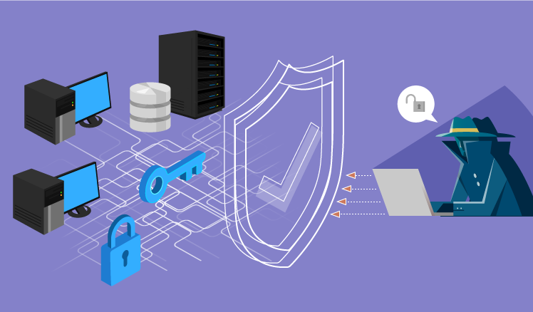
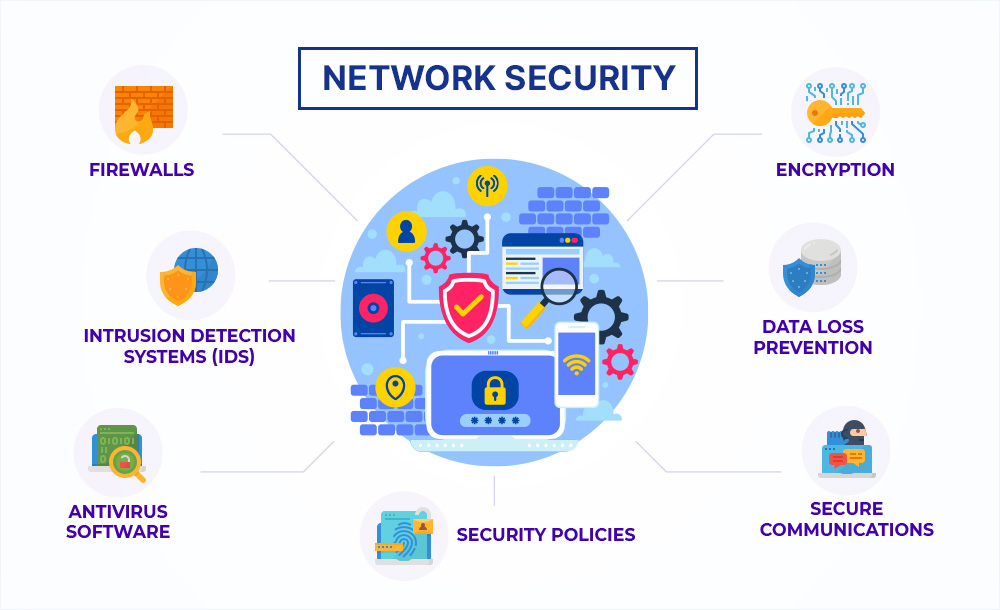

What is network security?
Network security is the practice of protecting an organization's infrastructure such as computers, servers, and data from unauthorized access or theft, involving a combination of hardware and software to ensure data confidentiality, integrity, and availability while preventing cyberattacks.

Why does it matter?
It is essential to protect sensitive data from theft and prevent costly cyberattacks. It safeguards intellectual property and customer privacy while ensuring regulatory compliance to avoid legal penalties and reputation damage. Without it, organizations face significant financial losses and operational downtime.
Where is it used?
Network security is used across all industries to protect data, applications, and infrastructure from unauthorized access, cyberattacks, and theft. It is applied on user devices, in data centers, and within cloud environments to safeguard against threats like malware, phishing, and data breaches.